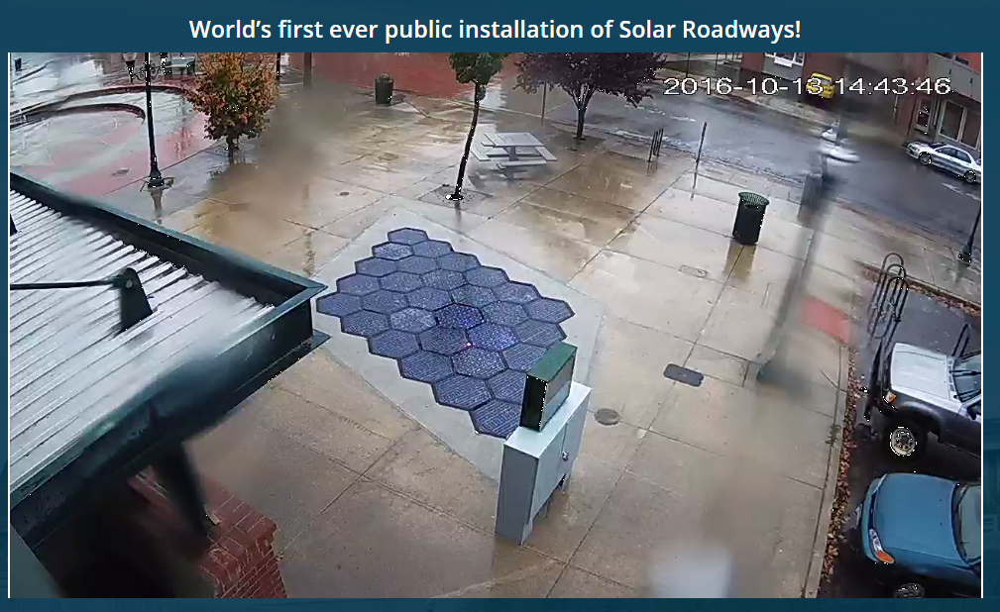

The Solar Flippin' Gardens ™ journey began on a dark rainy British evening, as most British evenings tend to be... Read More
Ok, let me shine some light on the real "About Us" and why I'm doing this. Read More
The Solar Flippin' Gardens ™ journey began on a dark rainy British evening, as most British evenings tend to be, I had been enjoying counting the failed LEDs in the Sandpoint SR3 install, I'd listened to Thunderf00ts latest YouTube about the installation, I'd read the EEVBlog forum posts discussing it. Two things kept coming up: No data, lots of cash, well actually there were lots more issues but that's another story.
And then I began to think...
We are lovingly known as "naysayers". A small team of, well one, just me so far. Other naysayers are welcome to contribute to the project as it's fully open on GitHub.
Hi, I'm Steve [or variations of names ending with Steve like "WTF are you doing now Steve"] and I like making things, mainly stupid internet connected things such as Role Pole The Internet connected toilet paper pole. I also make other not so silly things:
By day I'm a consultant software developer dealing with connectivity solutions for medical devices, forex and other fun stuff. Yes I'm available for hire, if you can find me, maybe you can hire me. My skills include
By night I run Tinamous, an Internet of Things platform for makers to get their thing on easily, I also make silly stuff, play with 3D printing and occasionally relax.
Why Solar Flippin Gardens? Well after several million dollars of funding via the public and tax payer money SR still have not demonstrated many of the claims of their panels. A recent install at Sandpoint failed even before installation. Of the 30 panels only 12 were "working" and many of those died shortly after. Even the working panels generated no actual electricity and worked only as far as showing a few dimly lit LEDs (as of 13 October 2016).
You may ask, why set the LEDs on dim and then complain when naysayers say how they can hardly see them from the best angle possible at 3pm on a gloomy wet day? Me too. If you know they are better than that then just turn it to 11 and don't let us naysayers have anything to go on. Or, if you know they are bad, then, hide that fact, set them to dim and complain about naysayers don't have anything to go on...
Much has been posted by Mr EEVBlog and Thunderf00t on YouTube to show what a bad idea this really is, yet tax payer money continues to fund this project. One major stumbling block for both SR and us naysayers is the lack of hard data from working panels, just how good or bad are they at generating energy? How well do they melt snow and ice? How visible are the LEDs in bright daylight from a drivers seat? How will the cope in the real world when a fully loaded truck thundering over them?
I figured it would be fun to build a similar version of the SR3 panels, and even more fun (and maybe even useful) to share this, in good detail (unlike SR) with the wider community. Please join me on the journey!
I don't have the knowledge or skills (or expensive equipment) to make glass panels, but I've got access to laser cutters to cut acrylic, I can get solar cells and 3D printer bead heaters from eBay and have NeoPixels to hand, what more could I possibly need.... Obviously my obsession with internet connected sh** makes me need to connect whatever I actually make to the internet. You'll eventually find the data over on the SFG Tinamous account.
Here's some great videos from EEV Blog and Thunderf00t showing us all why this is silly. Enjoy!
EEV Blog #632
EEV Blog #743
EEV Blog #902
Thunderf00t 31 May 2014
Thunderf00t 15 July 2014
Thunderf00t 11 Oct 2016 (The first video since Sandpoint)
The Promise of Solar Roadways: Scott Brusaw at TEDxSacramento